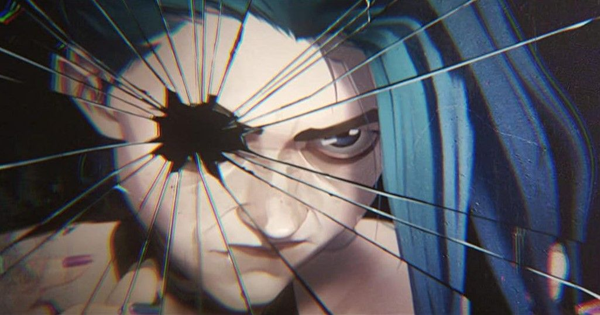

Jinx
Jinx, born as Powder, is a notorious Zaun Crest icon Zaunite criminal and Vi's Vi's younger sister. When she was a little girl,
her parents were killed in a failed uprising against Piltover Crest icon Piltover, leading Vander Vander, the unspoken leader of the undercity,
to adopt both her and Vi Vi as his own daughters. After a series of events forced Jinx and her sister apart in more ways than one, she was fundamentally and
irrevocably changed, transforming her into the demented killer she is today.
"It's Jinx now. Powder fell down a well."